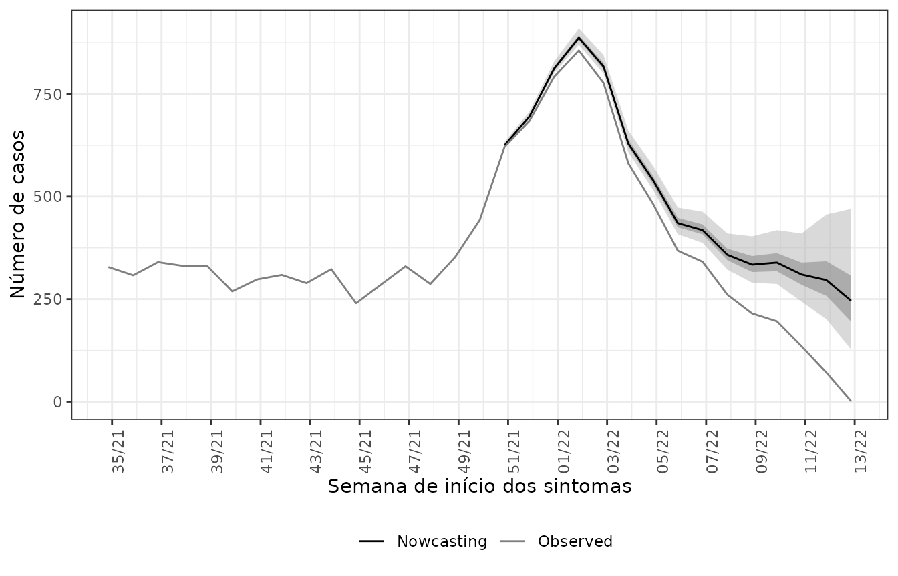
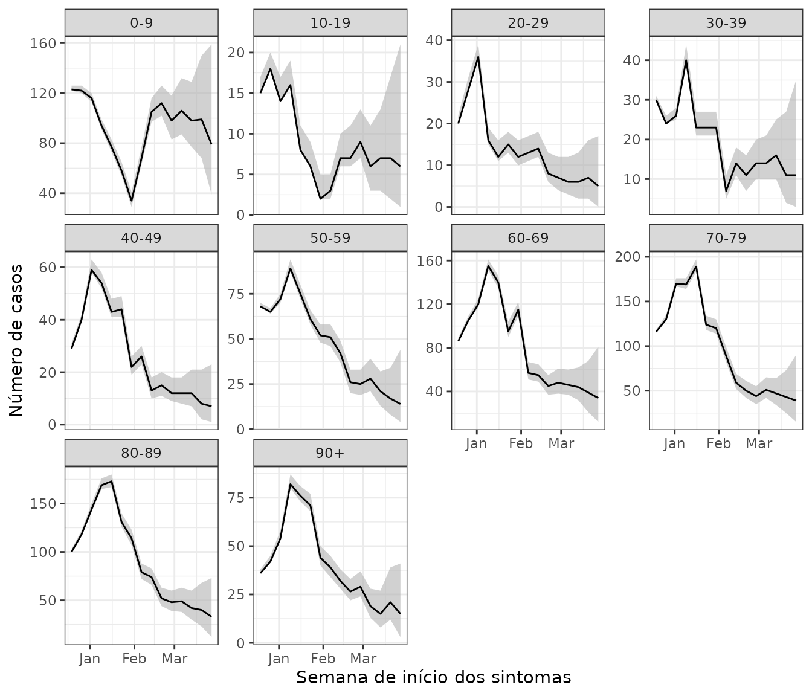
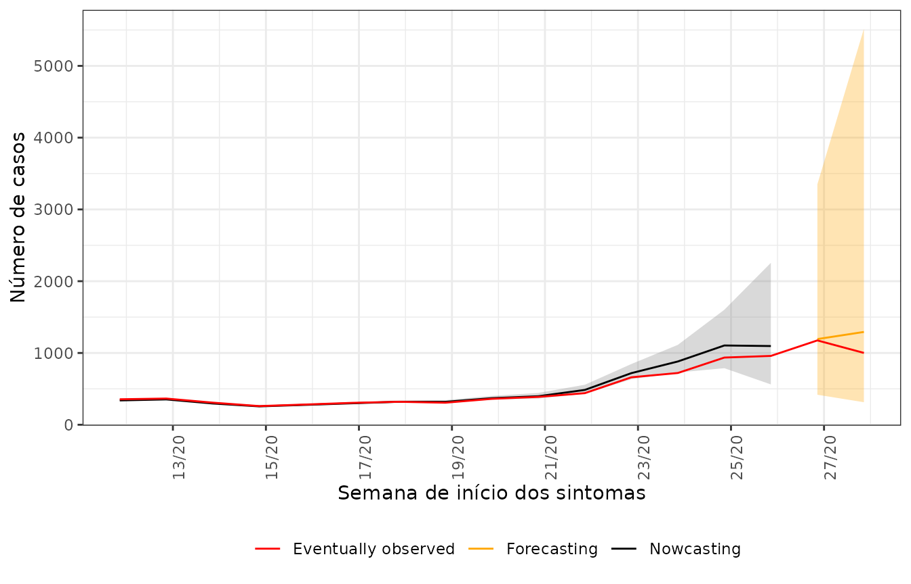

Resumo
Este é um artigo mais longo que explica o funcionamento e as escolhas por trás do modelo de nowcasting com GAM, suas vantagens e limitações.
Por que nowcasting_mgcv()
A nowcasting_mgcv() ajusta o mesmo modelo de nowcasting
que a nowcasting_inla(), um modelo binomial negativo para o
triângulo de atraso com efeitos suaves de tempo e de atraso, mas como um
modelo aditivo generalizado (GAM) com o mgcv no
lugar do INLA. O mgcv está no CRAN e é
instalado junto com o nowcaster, então esta função funciona
sem nenhuma instalação adicional. Ela é uma boa escolha quando o
INLA não pode ser instalado ou quando é preciso uma
estimativa rápida.
O modelo
Seja Y_{t,d} o número de casos com início dos sintomas na semana t notificados com atraso de d semanas. O modelo é
Y_{t,d} \sim \text{NegBinom}(\lambda_{t,d}, \phi), \qquad \log(\lambda_{t,d}) = \alpha + f_1(t) + f_2(d),
onde f_1 e f_2 são splines de regressão thin
plate penalizadas e \phi é o
parâmetro de dispersão, todos estimados pela mgcv::gam().
As células do triângulo de atraso ainda não observadas (t + d além da semana presente) são então
preditas. A incerteza é propagada sorteando 1.000 conjuntos de
coeficientes da sua distribuição a posteriori aproximada e, para cada
conjunto, sorteando as contagens não observadas da distribuição binomial
negativa. Somando as contagens observadas e sorteadas sobre os atrasos,
obtemos 1.000 trajetórias da curva epidêmica, resumidas pela mediana e
pelos intervalos de 50% e 95%.
Nowcasting não estruturado
Usamos os dados de SRAG de Belo Horizonte que acompanham o pacote. A função precisa do conjunto de dados e dos nomes das colunas de data de início dos sintomas e de notificação.
now_mgcv <- nowcasting_mgcv(dataset = sragBH,
date_onset = DT_SIN_PRI,
date_report = DT_DIGITA,
data.by.week = TRUE)
names(now_mgcv)#> [1] "total" "data"
head(now_mgcv$total)#> # A tibble: 6 × 7
#> Time dt_event Median LI LS LIb LSb
#> <int> <date> <dbl> <dbl> <dbl> <dbl> <dbl>
#> 1 17 2021-12-19 625 621 633 623 627
#> 2 18 2021-12-26 695 687 707. 692 698
#> 3 19 2022-01-02 812 801 829 807 817
#> 4 20 2022-01-09 887 870 910. 881 893
#> 5 21 2022-01-16 817 800. 845 810 825.
#> 6 22 2022-01-23 629 608 661 622 639total traz a estimativa para cada semana de início dos
sintomas (dt_event): a mediana (Median), o
intervalo de 50% (LIb, LSb) e o intervalo de
95% (LI, LS). Com
data.by.week = TRUE, data traz o triângulo de
atraso usado para ajustar o modelo, do qual obtemos a curva como era
observada na data do último registro:
observed <- now_mgcv$data |>
group_by(dt_event) |>
summarise(observed = sum(Y, na.rm = TRUE))
ggplot(now_mgcv$total, aes(x = dt_event)) +
geom_ribbon(aes(ymin = LI, ymax = LS), fill = "grey70", alpha = 0.5) +
geom_ribbon(aes(ymin = LIb, ymax = LSb), fill = "grey50", alpha = 0.5) +
geom_line(aes(y = Median, colour = "Nowcasting")) +
geom_line(data = observed, aes(y = observed, colour = "Observed")) +
scale_colour_manual(values = c(Nowcasting = "black", Observed = "grey50"),
name = "") +
scale_x_date(date_breaks = "2 weeks", date_labels = "%V/%y") +
labs(x = "Semana de início dos sintomas", y = "Número de casos") +
theme_bw() +
theme(legend.position = "bottom", axis.text.x = element_text(angle = 90))
Controlando a janela de estimação
Três argumentos, todos em semanas, controlam quais dados entram no modelo:
-
Dmax: o atraso máximo considerado (padrão 15). Casos notificados mais deDmaxsemanas após o início dos sintomas são descartados. -
wdw: o tamanho da janela, contada para trás a partir da última semana de início dos sintomas, usada para ajustar o modelo (padrão 30). -
trim.data: o número de semanas mais recentes a descartar antes do ajuste (padrão 0).
Uma janela menor torna o ajuste mais rápido e mais local:
now_short <- nowcasting_mgcv(dataset = sragBH,
date_onset = DT_SIN_PRI,
date_report = DT_DIGITA,
Dmax = 10,
wdw = 20)
tail(now_short$total)#> # A tibble: 6 × 7
#> Time dt_event Median LI LS LIb LSb
#> <int> <date> <dbl> <dbl> <dbl> <dbl> <dbl>
#> 1 16 2022-02-20 355 322 398. 342 370
#> 2 17 2022-02-27 344 302 402. 329 361
#> 3 18 2022-03-06 368 312. 433 348. 389
#> 4 19 2022-03-13 343 278. 429. 319. 371
#> 5 20 2022-03-20 320 226 435. 284 360
#> 6 21 2022-03-27 267 146 471. 217. 325Mantenha Dmax em 9 semanas ou mais: a suavização do
atraso usa 10 funções de base e precisa de pelo menos esse número de
atrasos distintos.
Nowcasting estruturado por idade
Os atrasos diferem entre faixas etárias, então o modelo pode ser
ajustado com uma suavização de tempo e uma de atraso para cada classe
etária. Passe a coluna de idade em age_col e escolha as
classes etárias com bins_age ("SI-PNI",
"10 years", "5 years" ou um vetor de pontos de
corte).
method.group.gam define como as suavizações são
compartilhadas entre as classes etárias:
-
"fs"(padrão): uma suavização por fator,s(Time, age_class, bs = "fs"), em que as curvas das classes etárias compartilham um parâmetro de suavização; -
"by": uma suavização independente para cada classe etária,s(Time, by = age_class), mais um intercepto por classe.
now_age <- nowcasting_mgcv(dataset = sragBH,
date_onset = DT_SIN_PRI,
date_report = DT_DIGITA,
age_col = Idade,
bins_age = "10 years",
method.group.gam = "fs")
names(now_age)#> [1] "total" "age"
head(now_age$age)#> # A tibble: 6 × 9
#> Time dt_event fx_etaria fx_etaria.num Median LI LS LIb LSb
#> <int> <date> <fct> <dbl> <dbl> <dbl> <dbl> <dbl> <dbl>
#> 1 17 2021-12-19 1 1 123 122 126 122 124
#> 2 17 2021-12-19 2 2 15 15 17 15 15
#> 3 17 2021-12-19 3 3 20 20 22 20 20
#> 4 17 2021-12-19 4 4 30 30 31 30 30
#> 5 17 2021-12-19 5 5 29 29 31 29 30
#> 6 17 2021-12-19 6 6 68 68 70 68 68O elemento age traz a estimativa para cada classe
etária, enquanto total soma as trajetórias sobre as classes
etárias. As classes são numeradas em ordem crescente de idade; com
bins_age = "10 years", a classe 1 é de 0 a 9 anos e a
classe 10 é de 90 anos ou mais:
age_labels <- c(paste0(seq(0, 80, 10), "-", seq(9, 89, 10)), "90+")
now_age$age |>
mutate(age_class = factor(age_labels[fx_etaria.num], levels = age_labels)) |>
ggplot(aes(x = dt_event, y = Median)) +
geom_ribbon(aes(ymin = LI, ymax = LS), fill = "grey70", alpha = 0.6) +
geom_line() +
facet_wrap(~age_class, scales = "free_y") +
labs(x = "Semana de início dos sintomas", y = "Número de casos") +
theme_bw()
Previsão
Definir K como um número positivo acrescenta
K semanas além da última semana de início dos sintomas ao
triângulo de atraso, e o modelo passa a prever também casos que ainda
não começaram. Aqui cortamos os dados em 4 de julho de 2020, como se
estivéssemos fazendo o nowcasting nessa data, e prevemos duas semanas à
frente:
srag_2020 <- sragBH |>
filter(DT_DIGITA <= as.Date("2020-07-04"))
now_forecast <- nowcasting_mgcv(dataset = srag_2020,
date_onset = DT_SIN_PRI,
date_report = DT_DIGITA,
K = 2)
tail(now_forecast$total, 4)#> # A tibble: 4 × 7
#> Time dt_event Median LI LS LIb LSb
#> <int> <date> <dbl> <dbl> <dbl> <dbl> <dbl>
#> 1 25 2020-06-14 1104. 788. 1602. 988. 1247
#> 2 26 2020-06-21 1096. 562. 2256 856 1404.
#> 3 27 2020-06-28 1194. 418. 3350. 839 1743.
#> 4 28 2020-07-05 1293 314. 5517. 774. 2148Como o conjunto de dados contém todos os casos notificados até 2022, podemos comparar a estimativa com o que foi observado depois:
eventually_observed <- sragBH |>
mutate(dt_event = DT_SIN_PRI - as.numeric(format(DT_SIN_PRI, "%w"))) |>
count(dt_event, name = "observed") |>
filter(dt_event >= min(now_forecast$total$dt_event),
dt_event <= max(now_forecast$total$dt_event))
now_forecast$total |>
mutate(part = ifelse(Time > max(Time) - 2, "Forecasting", "Nowcasting")) |>
ggplot(aes(x = dt_event)) +
geom_ribbon(aes(ymin = LI, ymax = LS, fill = part), alpha = 0.3) +
geom_line(aes(y = Median, colour = part)) +
geom_line(data = eventually_observed,
aes(y = observed, colour = "Eventually observed")) +
scale_colour_manual(values = c(Nowcasting = "black", Forecasting = "orange",
`Eventually observed` = "red"), name = "") +
scale_fill_manual(values = c(Nowcasting = "grey50", Forecasting = "orange"),
guide = "none") +
scale_x_date(date_breaks = "2 weeks", date_labels = "%V/%y") +
labs(x = "Semana de início dos sintomas", y = "Número de casos") +
theme_bw() +
theme(legend.position = "bottom", axis.text.x = element_text(angle = 90))
As duas últimas semanas são a previsão. Seus intervalos são bem mais largos, pois nenhum caso com início dos sintomas nessas semanas havia sido observado naquele momento.
Trajetórias e tendência
Com trajectories = TRUE a função também retorna as 1.000
trajetórias sorteadas. Elas podem ser resumidas de outras formas, por
exemplo para classificar a tendência da curva nas últimas semanas com
slope.estimate.quant() (que precisa do pacote
lme4). A função ajusta uma reta a cada trajetória nas
últimas window semanas e retorna 1 se a curva
está crescendo, 0.5 se provavelmente crescendo,
0 se estável ou incerta, -0.5 se provavelmente
caindo e -1 se caindo:
now_traj <- nowcasting_mgcv(dataset = srag_2020,
date_onset = DT_SIN_PRI,
date_report = DT_DIGITA,
trajectories = TRUE)
head(now_traj$trajectories)#> # A tibble: 6 × 4
#> # Groups: Time, dt_event [6]
#> sample Time dt_event Y
#> <chr> <int> <date> <dbl>
#> 1 1 12 2020-03-15 349
#> 2 1 13 2020-03-22 351
#> 3 1 14 2020-03-29 298
#> 4 1 15 2020-04-05 267
#> 5 1 16 2020-04-12 278
#> 6 1 17 2020-04-19 303
slope.estimate.quant(trajectories = now_traj$trajectories, window = 3)#> [1] 0Veja também
-
Primeiros
passos, a mesma análise com a
nowcasting_inla(). - Nowcasting com INLA, com os detalhes do modelo estruturado por idade.
- nowcasting_inla() ou nowcasting_mgcv(), os mesmos exemplos com as duas funções lado a lado.